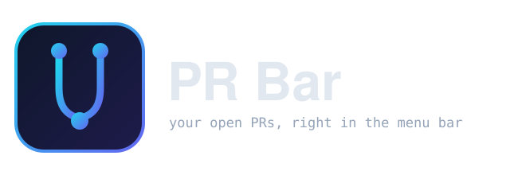

Your open pull requests,
live in the menu bar.

Reads straight from the gh CLI on your machine — no token of its own, no server, no browser cookie.
brew install djalmaaraujo/tap/pr-menubar
Fully native — no Electron · single Swift file · <30MB memory
What you get
Every PR, one row each
State, title, number, owner/repo, and a CI rollup glyph — pass, fail, pending, or none. Click a row to open the PR in your browser.
Filter by org or account
A dropdown built from the orgs you can reach, your personal account, and an "All" option. Private-membership orgs show up too, picked up from your actual PRs.
Stacked PRs as a tree
When one PR is based on another's branch, the chain renders indented with a vertical guide — a whole stack readable at a glance.
Count in the menu bar
The icon carries the number of open PRs in the current filter. Hidden when it's zero, so an empty queue stays quiet.
Clear failure state
If gh is missing, logged out, or offline, the popover shows the exact fix and a Retry button — and the icon becomes a warning triangle.
Refreshes on its own
Every 60 seconds, plus a manual refresh whenever you want it right now. No configuration, no background daemon.
How it works
PR Menubar shells out to the gh binary you already have installed and authenticated. It runs gh search prs --author=@me --state=open to list your PRs, then enriches each one with gh pr view for its CI status and branch names. Nothing else talks to GitHub, and the credentials are entirely gh's own.
Install
Homebrew, on Apple silicon:
brew install djalmaaraujo/tap/pr-menubar
Or build from source:
git clone https://github.com/djalmaaraujo/pr-menubar && cd pr-menubar/app && ./build.sh
The build script compiles, packages PRMenubar.app, ad-hoc signs it, and opens it. Drag it into /Applications to keep it around.
Requirements & limitations
- macOS 13 or later.
- Xcode Command Line Tools (
xcode-select --install) forswiftc. - The GitHub CLI installed and logged in — this app has no login flow of its own, it reads the session
ghalready has. - Lists PRs you authored (
--author=@me), open state only — no review-requested, assigned, or closed history. - macOS only. No Linux or Windows, and not a hosted service — everything runs locally.
FAQ
Does it need a GitHub token of its own?
No. It uses the gh CLI's existing authentication — run gh auth login once and you're set.
Does anything leave my machine?
Only the GitHub API calls gh already makes on your behalf. No server, no analytics, no third party.
Does it work on Linux or Windows?
No, macOS only (13+).
Does it cost anything?
Completely free and open source (MIT).